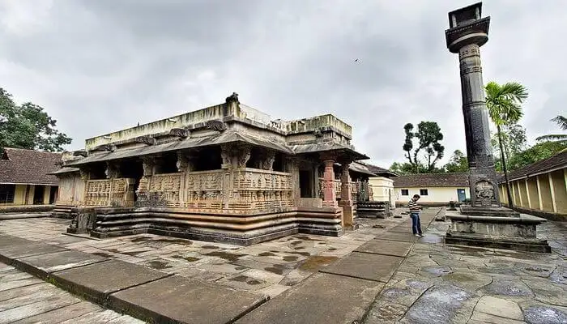

Shimoga - Ancient Rulers And Dynasties

The list of historical places in Karnataka cannot be complete without the mention of Shimoga which was an important seat for many dynasties. Have a rendezvous with its bygone rulers at Shivappa Nayaka Palace Museum. Shivamogga is also home to the exotic flora and fauna of Karnataka. Nature is abounding with tigers and other wild animals. The gushing waterfalls like Jog Falls, Dabbe falls, etc also put this place on bucket list of every wanderlust soul.
Places to Stay: Tip Top Residency, River Tern Lodge, Hotel Mayura Gerusoppa, Hombuja Residency, Gabadi River Edge
Places to Visit: Jog Falls, Kodachadri, Dabbe Falls, Kundadri, Agumbe
Things to do in Shimoga: Visit Agumbe, Kodachadri; explore waterfalls; forests; Tiger and Lion Safari; Bird-watching; trekking; water sports; history tours and nature walks
Ideal for: Families, friends, adventure, history, nature and archaeological exploration
Ideal trip duration: 2 days
Weather: Shimoga has a Tropical wet and dry climate with hot summers.
Best Time to visit Shimoga: October to March
How to reach Shimoga: Shimoga is accessible via roads and rails and has its own railway station. Nearest airport is Mangalore Airport which is 195 KM away.
Go Back